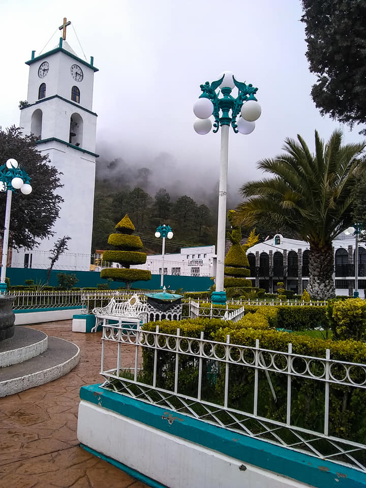

Bienvenidos a Lafragua
Lafragua es un municipio ubicado en la Sierra Norte de Puebla, conocido por sus impresionantes paisajes naturales, su rica historia y sus tradiciones culturales. Su cabecera municipal es el pueblo de Saltillo, que no debe confundirse con la ciudad de Saltillo en Coahuila.

Imagen representativa de los bosques y montañas de Lafragua.
¿Qué visitar en Lafragua?
Atractivos Turísticos:
Monumentos históricos:
Iglesia de San José (parroquia); capilla de San Isidro, construida con piedra de mármol.
Fiestas:
Celebran el 19 de marzo en honor a San José; 15 de mayo en honor a San Isidro; 28 de octubre en honor a San Judas Tadeo
Música:
Banda de vientos
Artesanía:
Se hacen bordados con hilo de seda, carpetas tejidas, manteles, servilletas y recuerdos para bodas, 15 años, algunas personas elaboran figuras de migajón.
Gastronimia:
Alimentos:
Mole poblano, barbacoa, mixiote preparado en hoja de maguey, tamales con hoja de milpa, chilposo de chile rojo guajillo, atole preparado en olla de barro.
Bebidas:
, aguamiel, aguardiente preparado con frutas como tejocote y manzana.
Dulces:
De calabaza, chilacayote y manzana.
Centros turísticos:
El cerro del Encanto, en él se encuentran figuras de piedra, se localiza a 20 minutos de la misma cabecera.